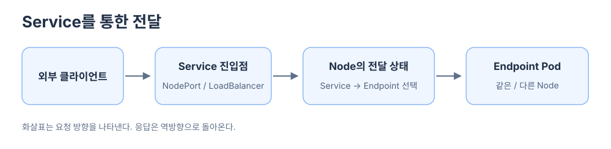
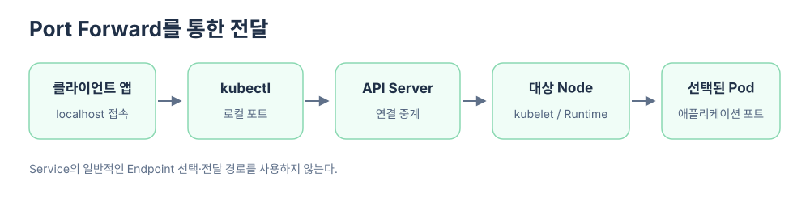

외부 클라이언트는 공개된 Service 주소로 접속할 수도 있고, kubectl port-forward가 연 로컬 포트로 접속할 수도 있다. 두 방법 모두 Pod에 도착하지만, 클러스터에 들어가는 입구와 대상 Pod에 연결되는 방식이 다르다.
Service를 통한 전달
NodePort를 사용하면 클라이언트는 Node IP:NodePort로 요청한다. LoadBalancer를 사용하면 클라이언트는 외부 IP로 요청하고, Load Balancer가 트래픽을 클러스터의 Service 전달 경로로 보낸다.

요청을 받은 Node는 미리 구성된 Service 전달 상태를 사용해 이용 가능한 Endpoint Pod 하나를 선택한다. 대상 Pod가 같은 Node에 있다면 Node 내부 경로로, 다른 Node에 있다면 Node 간 Pod 네트워크를 거쳐 전달한다. 구성에 따라 실제 전달 규칙은 kube-proxy가 iptables·nftables 등으로 준비하거나, 이를 대체하는 네트워크 구현이 맡을 수 있다.
클라이언트가 Control Plane Node의 NodePort로 접속했고 선택된 Pod가 Worker Node에 있다면, Control Plane Node로 들어온 NodePort 요청은 어떻게 Worker Pod까지 갈까?에서 Node의 Kernel이 목적지를 바꾸고 CNI 경로로 전달하는 과정을 이어서 볼 수 있다.
kube-proxy는 Service와 EndpointSlice의 변화를 관찰해 Node의 전달 상태를 갱신한다. 실제 요청이 올 때마다 API Server에 대상 Pod를 물어보는 방식은 아니다.
Port Forward를 통한 전달
kubectl port-forward svc/grafana 3000:80을 실행하면 kubectl이 실행된 클라이언트의 localhost:3000에서 연결을 받는다. 그 포트로 들어온 데이터는 kubectl에서 API Server와 대상 Node의 포트포워딩 경로를 거쳐 선택된 Pod의 포트로 전달된다. 응답은 같은 연결을 따라 역방향으로 돌아온다.

여기서 API Server는 Grafana에 보낼 HTTP 요청을 새로 만드는 것이 아니라 연결의 데이터를 중계한다. 명령에 svc/grafana를 지정한 것도 일반적인 Service 전달 규칙을 사용한다는 뜻이 아니다. kubectl이 Service를 기준으로 Pod 하나와 대상 포트를 찾아 포워딩한다. 선택된 Pod가 종료되면 포트포워딩 세션도 끝난다.
따라서 Service 접속은 Node에 준비된 Service 전달 상태가 Endpoint를 선택하고, Port Forward는 kubectl이 API Server를 통해 선택된 Pod까지 임시 통로를 만든다는 차이가 있다. 둘 다 대상 Node를 거칠 수 있지만, Port Forward의 클라이언트가 Node IP나 Service의 외부 주소에 직접 접속할 필요는 없다.
두 요청이 같은 Control Plane Node를 물리적으로 거칠 때 Node 내부의 어느 입구에서 갈라지는지는 같은 Control Plane Node를 거쳐도 Service와 Port Forward는 무엇이 다를까?에서 비교한다.